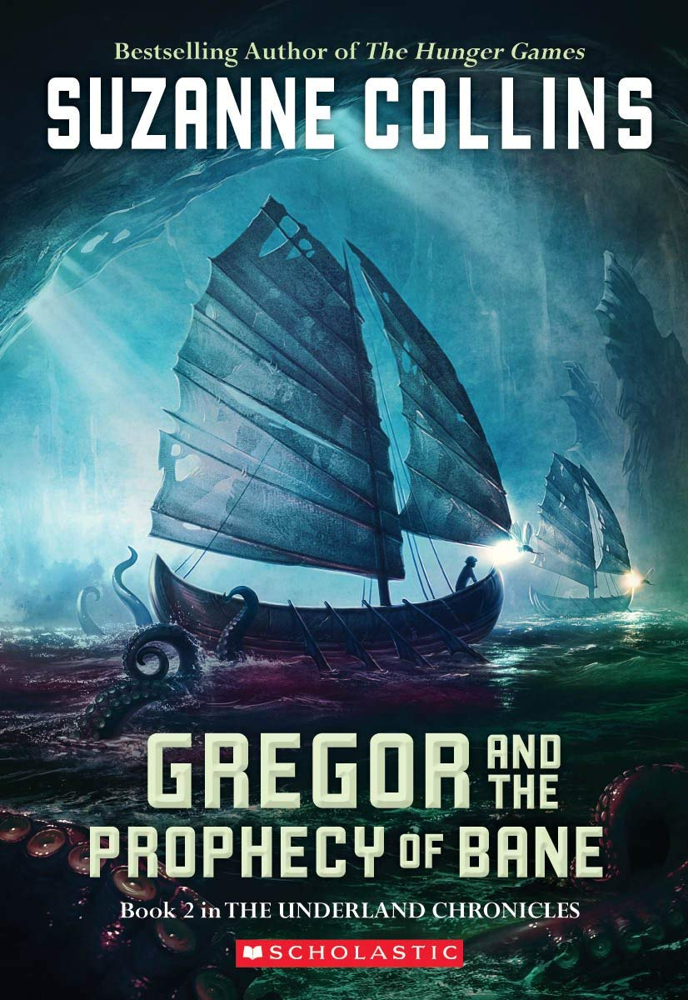
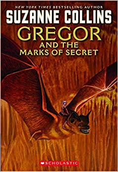
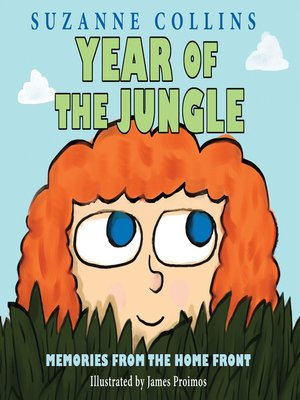

Katniss is a 16-year-old girl living with her mother and younger sister in the poorest district of Panem, the remains of what used be North America. Long ago the districts waged war on the Capitol and were defeated. As part of the surrender terms, each district agreed to send one boy and one girl to appear in an annual televised event called, "The Hunger Games." The terrain, rules, and level of audience participation may change but one thing is constant: kill or be killed. When her sister is chosen by lottery, Katniss steps up to go in her place.(Scholastic Press, 2008)
"Stellar, imaginative writing."
--Los Angeles Times
Much to her shock, Katniss has fueled an unrest she's afraid she cannot stop. And what scares her more is that she's not entirely convinced she should try. As time draws near for Katniss and Peeta to visit the districts on the Capitol's cruel Victory Tour, the stakes are higher than ever. If they can't prove, without a shadow of a doubt, that they are lost in their love for each other, the consequences will be horrifying.(Scholastic Press, 2009)
"A humdinger of a cliffhanger will leave readers clamoring for volume three."
--Kirkus Reviews
$12.99
Mockingjay
Katniss Everdeen, girl on fire, has survived, even though her home has been destroyed. Gale has escaped. Katniss’ family is safe. Peeta has been captured by the Capitol. District 13 really does exist. There are rebels. There are new leaders. A revolution is unfolding. The success of the rebellion hinges on Katniss’ willingness to be a pawn, to accept responsibility for countless lives, and to change the course of the future of Panem. To do this, she must put aside her feelings of anger and distrust. She must become the rebels’ Mockingjay - no matter what the personal cost.
"...this sequel has enough action to please Hunger Games fans and leaves enough questions tantalizingly unanswered for readers to be desperate for the next installment."
--School Library Journal
$14.99
Gregor The Overlander
This 2003 "Kirkus Reviews" Editor's Choice is now in paperback. When Gregor falls through a grate in his apartment building, he's hurtled into the dark Underland, a world that is on the brink of war. But his arrival is no accident--a prophecy foretells that Gregor has a role to play in the Underland's uncertain future. This 2003 Kirkus Reviews Editor's Choice is now in paperback. When Gregor falls through a grate in his apartment building, he's hurtled into the dark Underland, a world that is on the brink of war. But his arrival is no accident--a prophecy foretells that Gregor has a role to play in the Underland's uncertain future.
"The strong, likeable characters, easy reading level, and nonstop action make this series attractive to even reluctant readers."
--VOYA
$7.99

Gregor and The Prophecy of Bane
Gregor swears he will never return to the Underland, that strange world below New York City. But he is a key player in another prophecy, this one about an ominous white rat called the Bane. The Underlanders know there is only one way to lure Gregor back to their world: by kidnapping his little sister, Boots.
Now Gregor’s quest reunites him with his bat, Ares, and the rebellious princess Luxa. They descend into the dangerous Waterway in search of the Bane. If Gregor does not fulfill the prophecy, his life, and the Underland, will never be the same
"The addition of the mother adds a fresh dynamic to the fast-paced, suspenseful story. Fans of the series will enjoy this latest, skillfully told adventure."
--Booklist
$9.99
Gregor and The Curse of The Warmbloods
In the third installment of Suzanne Collins's New York Times bestselling The Underland Chronicles, Gregor must stop a plague from spreading through the Underland.
With two prophecies fulfilled, Gregor is now focused on the Prophecy of Blood, which calls for Gregor and "the princess," Boots, to return to the Underland to help ward off a plague. His mom agrees to let them go--on the condition that she travels with them.When they arrive in the subterranean city, the plague is spreading--and one of Gregor's family is stricken. Only then does he understand his role in the prophecy. He must summon all his power to end the biological warfare, or the warmblood creatures of the Underland will die.The adventure continues in the third book in Suzanne Collins's New York Times bestselling middle grade series.
"Although no further prophecy is unveiled at the end to explicitly promise another sequel, readers will surely be hoping for one."
--Kirkus Reviews
$8.99

Gregor and The Marks of Secret
Now, in the fourth book in Suzanne Collins's New York Times bestselling series, Gregor is drawn into a crisis. For generations, rats have run the mice--or "nibblers"--out of whatever lands they've claimed, keeping them on the move. But now the mice are disappearing, and the young queen Luxa is determined to find out why.When Gregor joins her on a fact-finding mission, the true fate of the mice is revealed. It is something far more sinister than Gregor or Luxa had imagined--and it points the way to the final prophecy he has yet to fulfill. Will Gregor's role as warrior be put to the test?
"Fans of this inventive series and new readers alike will be instantly caught up in the action and will look forward to future installments."
--School Library Journal
7.99
Gregor and The Code of Claw
Everyone in the Underland has been taking great pains to keep The Prophecy of Time from Gregor. Gregor suspected it says something awful but he never imagined just how awful: It calls for the warrior's death. Now, with an army of rats approaching and his mom and sister still in Regalia, Gregor the warrior must gather up his courage to help defend Regalia and get his family home safely. The entire existence of the Underland is in Gregor's hands, and time is running out. There is a code to be cracked, a mysterious new princess, Gregor's burgeoning dark side, and a war to end all wars. This is the thrilling conclusion to Suzanne Collins's New York Times bestselling middle grade series.
Character development, plotting, pacing, and description all shine; suspenseful chapter endings propel the story forward to its shocking and sobering conclusion."
--The Horn Book Magazine
$6.99
When Charlie McButton Lost Power
Charlie McButton likes computer games so much, he never plays with anything else. When a thunderstorm knocks out the electricity, his tech empire comes tumbling down, and his whole world loses power. Charlie needs batteries—FAST! But the only triple- A's he can find are in his little sister's talking doll. Will he resort to desperate measures and cause his sister to have a meltdown of her own? Or will he snap out of his computer craze long enough to realize his sister might be fun, even if she doesn't come with batteries? Collins and Lester team up for a hilarious and timely tale that will crack up young computer addicts and those who love them!
Unlikely to work as behavior modification, but young geeks may take a break from their screens to enjoy the over-the-top art."
--Kirkus Reviews
$10.99

Year of The Jungle
When young Suzy's father leaves for Vietnam, she struggles to understand what this means for her and her family. What is the jungle like? Will her father be safe? When will he return? The months slip by, marked by the passing of the familiar holidays and the postcards that her father sends. With each one, he feels more and more distant, until Suzy isn't sure she'd even recognize her father anymore.This heartfelt and accessible picture book by Suzanne Collins, the New York Times bestselling author of the Hunger Games series, is accompanied by James Proimos's sweet and charming illustrations. This picture book will speak to any child who has had to spend time away from a parent.
"Year of the Jungle" brings up big questions. Parents will need to provide the answers ."
--The New York Times, Danielle Trussoni